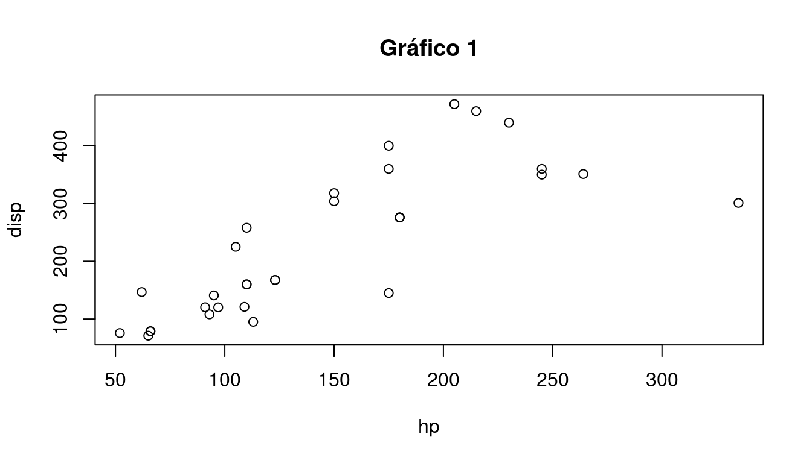
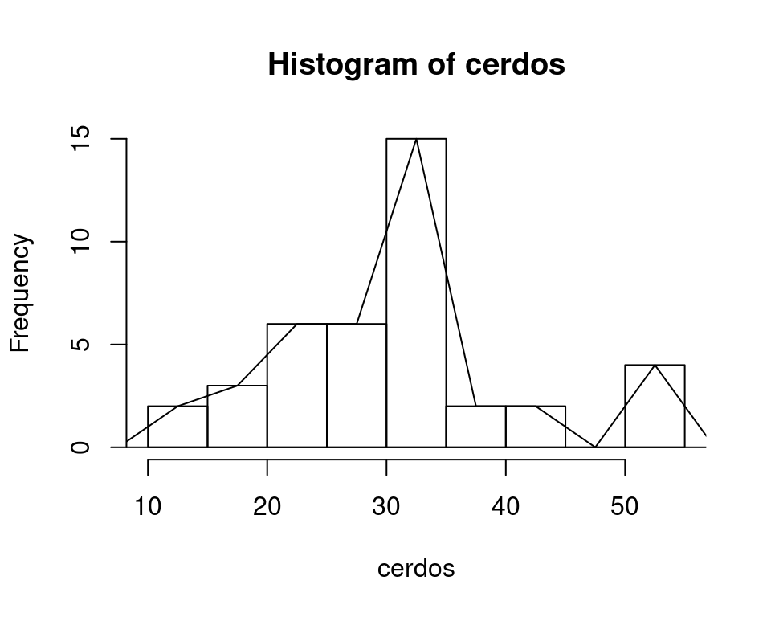

Capítulo 11 Guía 8 - Correlación Simple - Regresión Lineal Simple
11.1 Ejercicio 1
Los siguientes gráficos representan la relación entre dos variables aleatorias x e y. Sabiendo que cada gráfico corresponde a diferentes variables que han arrojado los coeficientes de correlación:
r=0.96
r=0.79
r=0
Analizar los dispersogramas y asociar cada gráfico con el coeficiente que considere mas adecuado. Procedemos en R:

plot(iris$Sepal.Width, iris$Sepal.Length, data=iris,
xlab="Sepal Width", ylab="Sepal Length", main="Gráfico 2")
plot(iris$Petal.Width, iris$Petal.Length, data=iris,
xlab="Petal Width", ylab="Petal Length", main="Gráfico 3")
11.2 Ejercicio 2
El set de datos “cars” o autos está por defecto en R. Tiene los registros de velocidad y distancia, y un total de 50 observaciones.
Los datos corresponden a la velocidad de los automóviles y las distancias tomadas para detenerse.
- Vamos a graficar un dispersograma
- Calcular el coeficiente de correlación
- Probar si el coeficiente es significativamente distinto de cero al 5% (test de hipótesis) y concluir.
11.3 Ejercicio 3
Para el ejemplo dado en el Ejercicio 2:
Escribir el modelo lineal que relaciona ambas variables.
Hallar los estimadores a y b y escribir la ecuación de la recta.
#Podemos hallar los estimadores a y b mediante la siguiente función
cars_model<-lm(dist~speed, data=cars)
cars_model- Si la velocidad es de 6 mph, ¿qué distancia se necesitará para detenerse?
11.4 Ejercicio 4
La concentración de ácido ascórbico (mg/100g) de bulbos de cebollas, en función del tiempo de almacenaje postcosecha desde el mes 1 al 10, respondió al modelo:
\(\hat{y} = 8.55 + (-0.28) x\)
Interpretar en términos del problema los coeficientes.
Puede estimar la concentración de ácido ascórbico al mes 6? En caso afirmativo, hágalo, en caso negativo, justifique.
¿Puede estimar la concentración de ácido ascórbico al mes 12? En caso afirmativo, hágalo, en caso negativo, justifique.